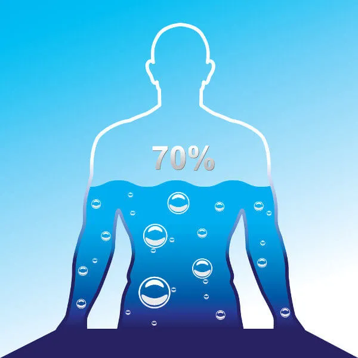
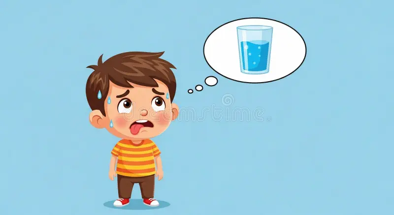
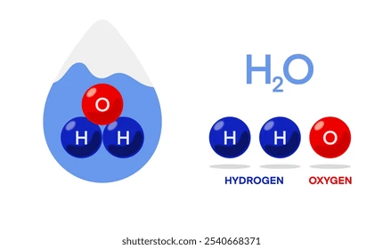
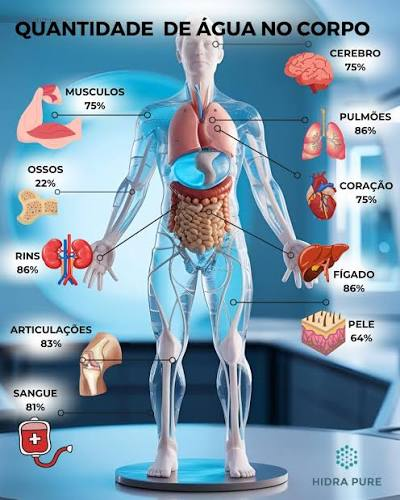

A água é uma substância essencial para a vida de todos os seres vivos, e na maioria das vezes representa uma boa parte do peso desses seres, ou seja, é abundante no corpo deles, um desses seres é o humano. O ser humano tem cerca de 60% de seu peso composto por água (80% em crianças), e isso mostra a importância da água na nossa vida, ela faz muitos processos vitais para a nossa sobrevivência como o transporte de oxigênio, nutrientes e minerais, a digestão e o regulamento da temperatura corporal. Porém, como essa água não pode ser estocada em nosso corpo, ele deve ser regularmente reposta todos os dias antes de se sentir sede. (BrasilEscola)

Assim que ficamos um período extenso sem tomar água, ativamos no cérebro uma região que cientistas chamam de "centro da sede", e ela fica responsável por avisar ao corpo que estamos com falta de água no organismo, então o corpo tenta tomar algumas medidas para aproveitar ao máximo a água no corpo. Mas mesmo fazendo isso, o corpo ainda sofre algumas consequências por falta de água no organismo como:
Porém, o excesso de água no nosso organismo também pode nos causar problemas como a hiponatremia, que é a queda do nível de sódio. A quantidade de sódio para o nosso corpo é fundamental para:
Os sintomas dessa intoxicação incluem:

No corpo humano, essa substância exerce variadas atividades essenciais para garantir o equilíbrio e funcionamento adequado do organismo como um todo. Dentre essas funções, podemos destacar o seu papel como solvente, garantindo um meio propício para a realização da grande maioria das reações químicas.
Os reagentes são as moléculas que se transformam, originando o produto. A água participa das reações tanto como reagente quanto com produto.
Ao conjunto de reações químicas que ocorrem em um organismo damos o nome de metabolismo.
Quando a água participa de uma reação como reagente, o processo recebe o nome de reação de hidrólise (do grego, lise = quebra). Isso acontece porque a água promove a quebra da molécula que está reagindo com ela.
Quando a água participa de uma reação como produto, o processo recebe o nome de reação de síntese por desidratação, pois são retirados átomos de H e O da molécula, que se unem, formando uma molécula de água. isso ocorre nas ligações entre aminoácidos para formar as proteínas.
Além disso, a água também exerce papel primordial na eliminação de substâncias tóxicas. É, principalmente, por meio da urina, que é 95% composta de água, que liberamos para fora do corpo substâncias que estão em excesso ou que não possuem função no nosso organismo.
A água também é um importante componente do plasma sanguíneo, sendo responsável, portanto, pelo transporte de nutrientes, oxigênio e sais minerais para as células. Assim como ela atua levando substâncias, também funciona transportando os produtos do metabolismo até os locais de sua eliminação.
A regulação da temperatura do corpo também é conseguida pela água. Em dias quentes, nosso corpo começa a produzir o suor, que é eliminado para fora do corpo. Ao evaporar, o suor provoca a diminuição da temperatura. Percebe-se, portanto, que a temperatura não é controlada pela eliminação de suor, e sim graças à sua evaporação.
Além de todas essas funções, não podemos nos esquecer de que a água faz parte da composição de nossas células, tecidos e órgãos.
Como a água não pode ser armazenada em nosso corpo, é fundamental sempre ingeri-la para que haja um balanço entre o que é ingerido e o que se perde, principalmente, por meio da transpiração e eliminação de urina e fezes. Portanto, lembre-se sempre de beber bastante água, principalmente em dias com temperaturas altas e durante a realização de atividades físicas.
Embora nutrientes como proteínas, gorduras, carboidratos, vitaminas, fibras e minerais sejam importantes eles não seriam capazes de exercer suas funções sem água.
Dependendo da idade, a quantidade de água presente em nosso organismo pode variar entre 60% e 75%. Quanto mais nova uma pessoa é, mais água há em seu organismo. Conforme vamos envelhecendo o percentual de água corporal sofre naturalmente uma diminuição.
.
Emanuel Vale 8
Lucas Leonardi 19
Heitor Marques 11
Iara Carvalho 33
Yasmin Pieri 31
Beatriz Mattos 4
1°N